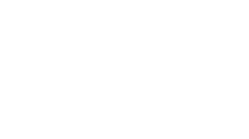

dyeary is in private beta on iOS. Join early and watch your first months fill in.
Join the betaTranscribing your words and sensing the feeling in your voice.
You slowed down today and let the quiet in. There's a lightness underneath the tiredness, and it sounds like relief.
Your test entry saves to your dyeary account, so it's already waiting when you open the app. No separate signup.
Free. Signing in creates your dyeary account and agrees to the Terms and Privacy Policy.
We'll send a one-time link. Open it on this device to come back and try it.
